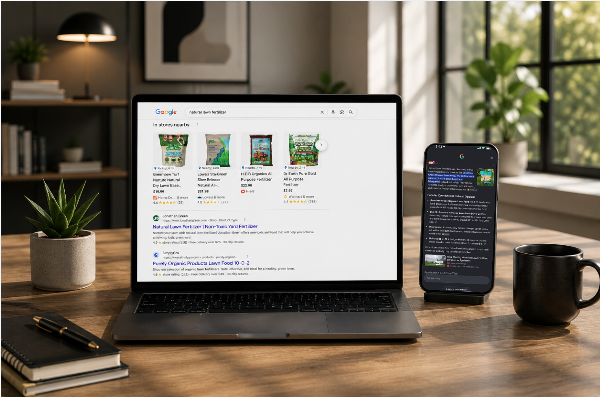

I use on-page and technical SEO to grow organic traffic.
Through content strategy, technical SEO, and on-page optimization — sustained growth that survived Google's toughest algorithm years.

Rapid growth exposed real weaknesses.
JonathanGreen.com entered 2019 with 17,028 monthly organic visits and 15,239 ranking keywords. As Google's Core Updates rolled out, cracks in the foundation showed.
Rapid content expansion alone wasn't enough. The site needed stronger information architecture, topical authority, content quality, and better internal linking.
Four pillars, built to compound.
Content Architecture
- Built scalable content hubs
- Expanded topical authority
- Organized content around user intent
- Improved semantic relevance
On-Page SEO
- Optimized title tags
- Meta descriptions
- Heading hierarchy
- Internal linking & content optimization
Technical SEO
- Improved crawlability
- Site structure
- Content consolidation
- Technical health
Algorithm Resilience
- High-quality evergreen content
- No algorithm-loophole chasing
- Built to withstand Core Updates
Keyword footprint nearly doubled in one quarter.
March 2023 to June 2023 — from 30,362 to 60,392 ranking keywords.
I turned fewer, higher-quality pages into more traffic. I consolidated overlapping content into single authoritative pages, so even as total keyword count later dropped, traffic kept climbing.
Every Google update, and what I did about it.
Red markers are Google's updates, out of my control. Gold markers are the work I did in direct response to each one.
March 2024: the update that could have sunk five years of work — I made it the strongest month yet.
The numbers, end to end.
Traffic nearly quadrupled while Authority Score stayed flat. I did that with content architecture and on-page SEO, not backlink acquisition — proof the growth was earned, not bought.
What that traffic was worth.
I calculated this by taking each year's organic clicks per keyword and multiplying by that keyword's average Google Ads CPC, then summing across the ranking keyword set — the standard way to price organic traffic against what it would cost in paid media.
Organic growth reduced dependency on paid acquisition while increasing visibility for category-defining search terms.
Optimized on-page SEO for high-volume, high-intent keywords.
Two real examples of that on-page optimization work in action.
| Date | Position | Volume | URL |
|---|---|---|---|
| Jan 2019 | #22 | 2,900 | /organic-lawn-care.html |
| Jun 2021 | #6 | 5,400 | /product/organic-lawn-food.html |
| Jun 2023 | #6 | 3,600 | /product/organic-lawn-food.html |
| Now | #1 | 5,400 | /product/organic-lawn-food.html |
| Date | Position | Volume | URL |
|---|---|---|---|
| Jan 2019 | #18 | 1,900 | /product/soil-ph-test-kit.html |
| Jun 2021 | #9 | 3,600 | /product/soil-ph-test-kit.html |
| Jun 2023 | #12 | 1,900 | /product/soil-ph-test-kit-for-lawns (URL migrated, dipped) |
| Now | #3 | 9,900 | /product/soil-ph-test-kit-for-lawns |
Why hiring managers should care.
Typical SEO Growth
My Approach
The growth engine was content strategy, site architecture, internal linking, and on-page SEO — not link building.
Enterprise SEO that withstood Google's toughest years.
From 2019 through 2025, JonathanGreen.com successfully navigated more than five major Google Core and Helpful Content Updates while dramatically expanding its organic footprint. Rather than relying on aggressive backlink campaigns, the strategy centered on scalable content architecture, technical optimization, internal linking, and high-quality on-page SEO.
The result was sustained, defensible organic growth that continued to recover and outperform after every major algorithm change.
If you're hiring someone to build sustainable organic growth — not temporary SEO wins — this case study demonstrates exactly that capability.